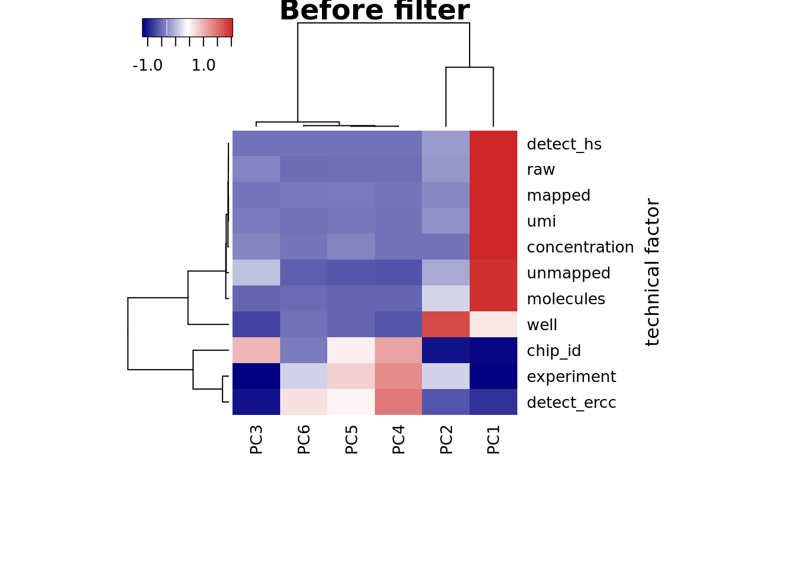
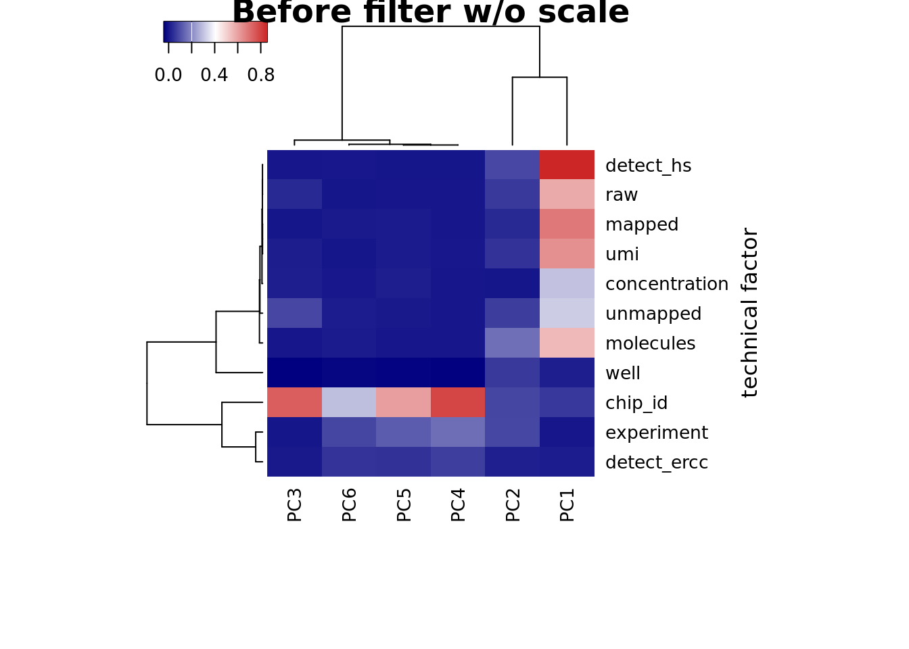
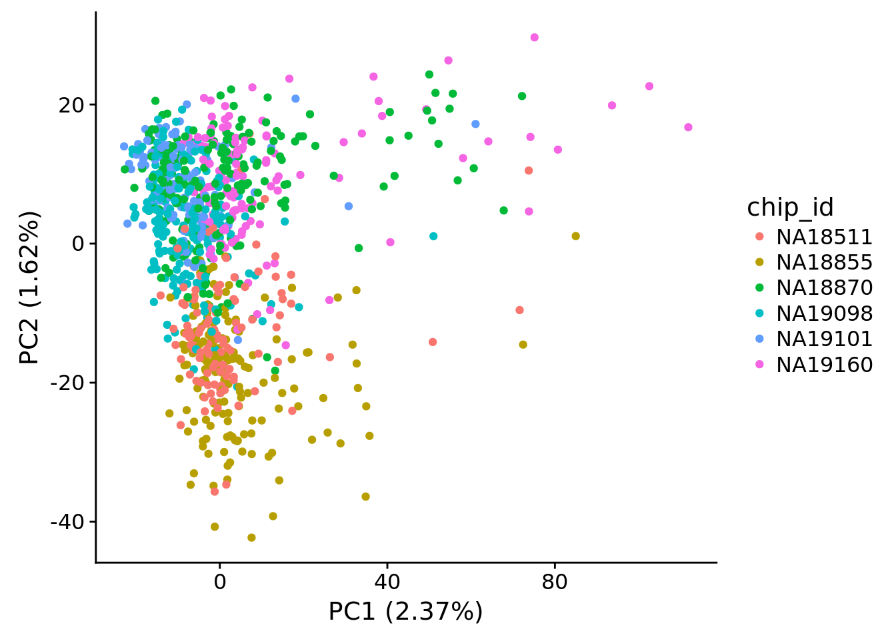
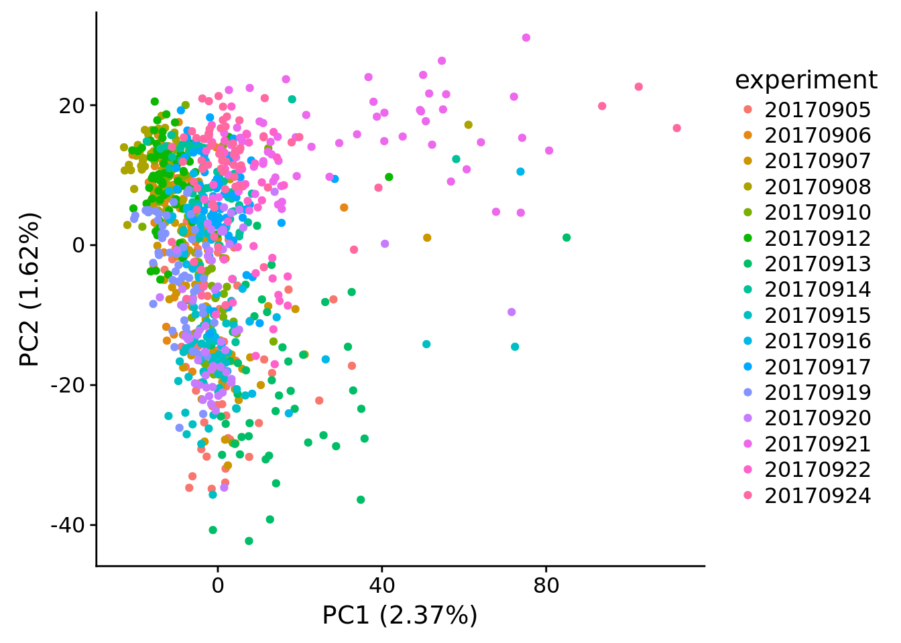
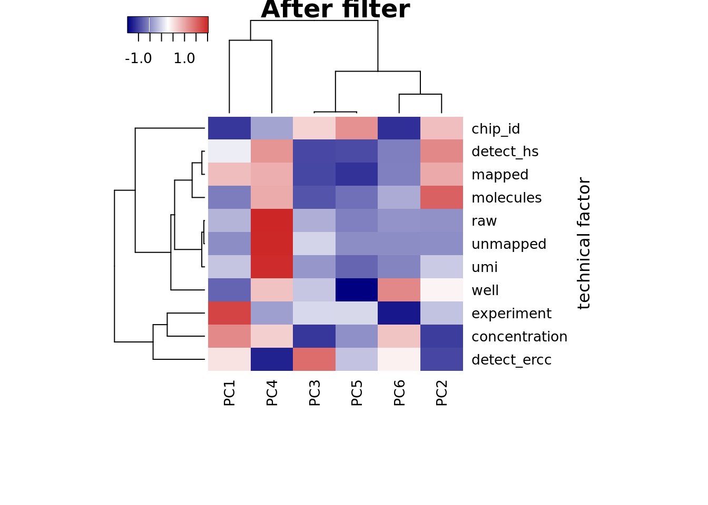
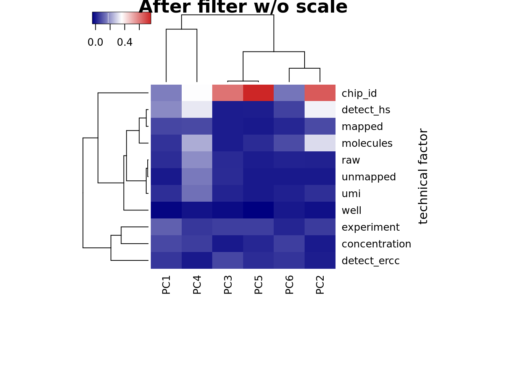
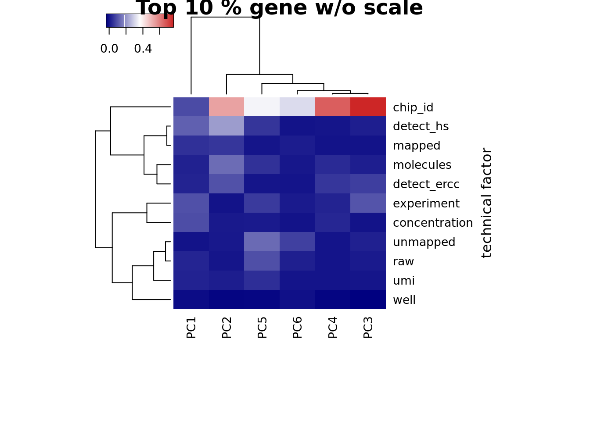

Last updated: 2018-05-18
Code version: f053912
library("cowplot")
library("dplyr")
library("edgeR")
library("ggplot2")
library("heatmap3")
library("reshape2")
library("Biobase")
source("../code/utility.R")fname <- Sys.glob("../data/eset/*.rds")
eset <- Reduce(combine, Map(readRDS, fname))
## look at human genes
eset_hs <- eset[fData(eset)$source == "H. sapiens", ]
head(featureNames(eset_hs))[1] "ENSG00000000003" "ENSG00000000005" "ENSG00000000419" "ENSG00000000457"
[5] "ENSG00000000460" "ENSG00000000938"## remove genes of all 0s
eset_hs_clean <- eset_hs[rowSums(exprs(eset_hs)) != 0, ]
dim(eset_hs_clean)Features Samples
19348 1536 ## convert to log2 cpm
mol_hs_cpm <- cpm(exprs(eset_hs_clean), log = TRUE)
mol_hs_cpm_means <- rowMeans(mol_hs_cpm)
summary(mol_hs_cpm_means) Min. 1st Qu. Median Mean 3rd Qu. Max.
2.413 2.482 3.180 3.858 4.761 12.999 ## keep genes with reasonable expression levels
mol_hs_cpm <- mol_hs_cpm[mol_hs_cpm_means > median(mol_hs_cpm_means), ]
dim(mol_hs_cpm)[1] 9674 1536## pca of genes with reasonable expression levels
pca_hs <- run_pca(mol_hs_cpm)
## a function of pca vs technical factors
get_r2 <- function(x, y) {
stopifnot(length(x) == length(y))
model <- lm(y ~ x)
stats <- summary(model)
return(stats$adj.r.squared)
}
## selection of technical factor
covariates <- pData(eset) %>% dplyr::select(experiment, well, concentration, raw:unmapped,
starts_with("detect"), chip_id, molecules)
## look at the first 6 PCs
pcs <- pca_hs$PCs[, 1:6]
## generate the data
r2_before <- matrix(NA, nrow = ncol(covariates), ncol = ncol(pcs),
dimnames = list(colnames(covariates), colnames(pcs)))
for (cov in colnames(covariates)) {
for (pc in colnames(pcs)) {
r2_before[cov, pc] <- get_r2(covariates[, cov], pcs[, pc])
}
}
## plot
heatmap3(r2_before, cexRow=1, cexCol=1, margins=c(8,8),
ylab="technical factor", main = "Before filter")
heatmap3(r2_before, cexRow=1, cexCol=1, margins=c(8,8), scale = "none",
ylab="technical factor", main = "Before filter w/o scale")
plot_pca(pca_hs$PCs, pcx = 1, pcy = 2, explained = pca_hs$explained,
metadata = pData(eset_hs), color="chip_id")Import data post sample and gene filtering
eset_filter <- readRDS("../data/eset-filtered.rds")Compute log2 CPM based on the library size before filtering.
log2cpm <- cpm(exprs(eset_filter), log = TRUE)
dim(log2cpm)[1] 11093 923pca_log2cpm <- run_pca(log2cpm)
pdata <- pData(eset_filter)
pdata$experiment <- as.factor(pdata$experiment)
plot_pca(x=pca_log2cpm$PCs, explained=pca_log2cpm$explained,
metadata=pdata, color="chip_id")
plot_pca(x=pca_log2cpm$PCs, explained=pca_log2cpm$explained,
metadata=pdata, color="experiment")
## selection of technical factor
covariates <- pData(eset_filter) %>% dplyr::select(experiment, well, chip_id,
concentration, raw:unmapped,
starts_with("detect"), molecules)
## look at the first 6 PCs
pcs <- pca_log2cpm$PCs[, 1:6]
## generate the data
r2 <- matrix(NA, nrow = ncol(covariates), ncol = ncol(pcs),
dimnames = list(colnames(covariates), colnames(pcs)))
for (cov in colnames(covariates)) {
for (pc in colnames(pcs)) {
r2[cov, pc] <- get_r2(covariates[, cov], pcs[, pc])
}
}
## plot heatmap
heatmap3(r2, cexRow=1, cexCol=1, margins=c(8,8),
ylab="technical factor", main = "After filter")
heatmap3(r2, cexRow=1, cexCol=1, margins=c(8,8), scale = "none",
ylab="technical factor", main = "After filter w/o scale")
PC1 correlated with number of genes detected, which is described in Hicks et al 2017
Number of genes detected also highly correlated with sequencing metrics, especially total molecule number per sample.
cor_tech <- cor(as.matrix(covariates[,4:11]),use="pairwise.complete.obs")
heatmap(cor_tech, symm = TRUE)Look at the top 10% expression genes to see if the correlation of PC1 and number of detected gene would go away. However, the PC1 is still not individual (chip_id).
## look at top 10% of genes
log2cpm_mean <- rowMeans(log2cpm)
summary(log2cpm_mean) Min. 1st Qu. Median Mean 3rd Qu. Max.
2.447 3.482 4.505 4.865 5.882 13.434 log2cpm_top <- log2cpm[rank(log2cpm_mean) / length(log2cpm_mean) > 1 - 0.1, ]
dim(log2cpm_top)[1] 1110 923pca_top <- run_pca(log2cpm_top)
## look at the first 6 PCs
pcs <- pca_top$PCs[, 1:6]
## generate the data
r2_top <- matrix(NA, nrow = ncol(covariates), ncol = ncol(pcs),
dimnames = list(colnames(covariates), colnames(pcs)))
for (cov in colnames(covariates)) {
for (pc in colnames(pcs)) {
r2_top[cov, pc] <- get_r2(covariates[, cov], pcs[, pc])
}
}
## plot heatmap
heatmap3(r2_top, cexRow=1, cexCol=1, margins=c(8,8),
ylab="technical factor", main = "Top 10 % gene")heatmap3(r2_top, cexRow=1, cexCol=1, margins=c(8,8), scale = "none",
ylab="technical factor", main = "Top 10 % gene w/o scale")
This R Markdown site was created with workflowr